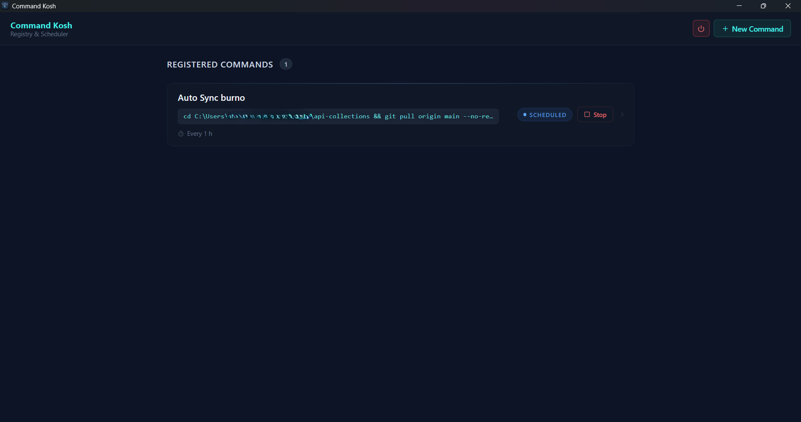
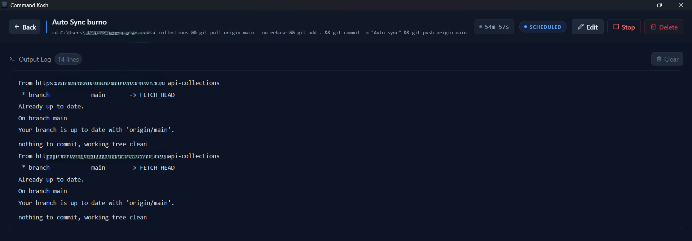
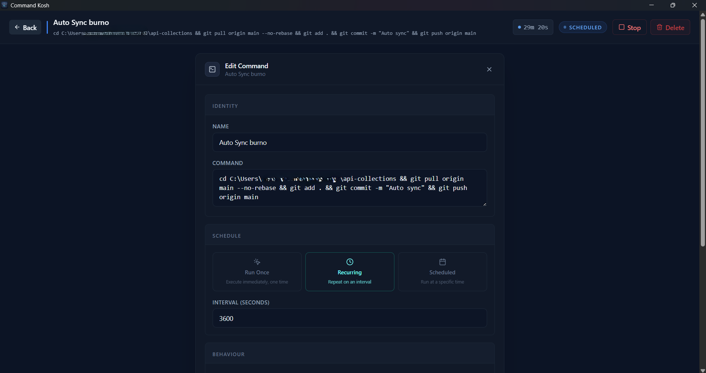
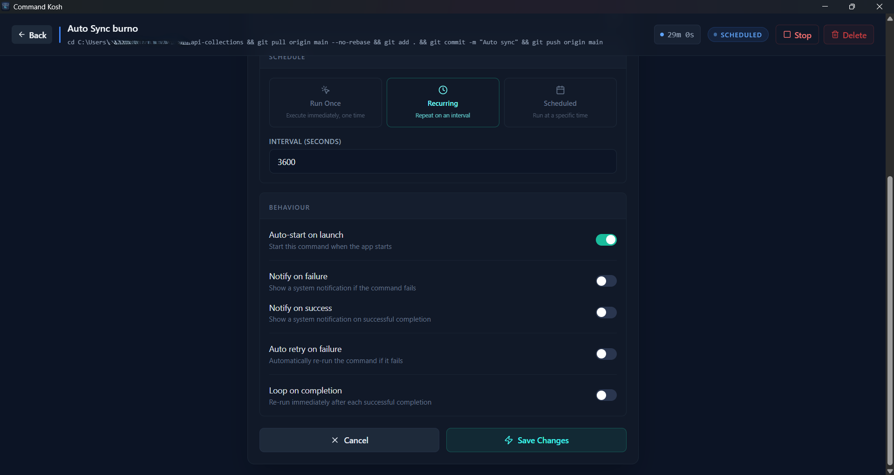
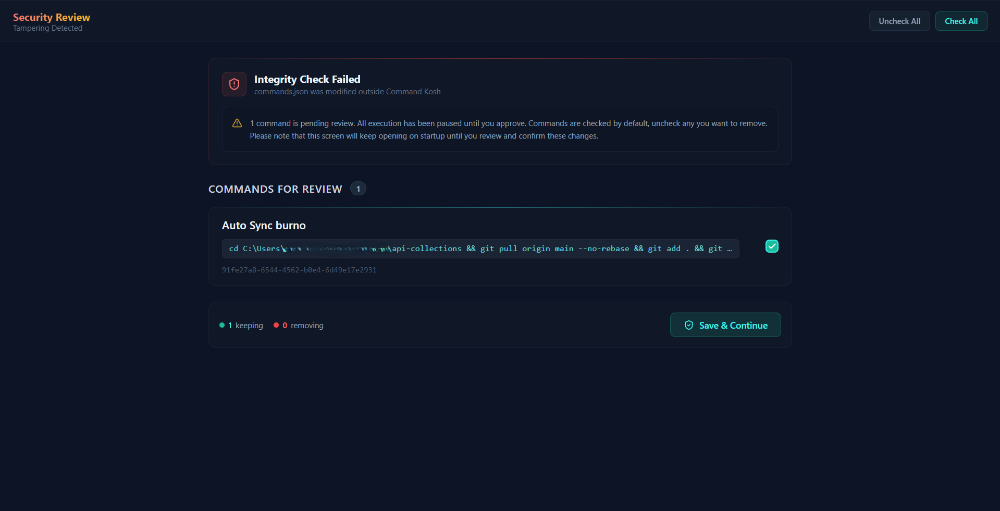

Execute commands
without the terminal.
Command Kosh is a lightweight vault for your terminal commands. Built with Rust & Tauri. Run them directly from the UI or schedule them to run automatically in the background.

Visual Runner
Monitor real-time output and status directly within the interface. Start, stop, or restart any command without having to spawn a shell window manually.

Workflow Automation
Easily add, edit, or schedule commands to run automatically. You no longer need to rely on scattered scheduled tasks or loose scripts lying around in folders.


OS-Level Security
Every command is verified via HMAC-SHA256 signatures before execution. If a command is modified externally by bad actors, the app flags it immediately.
